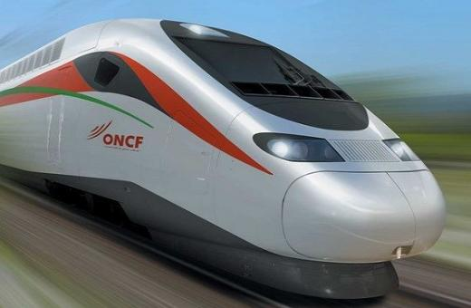
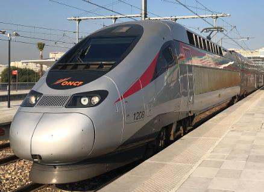
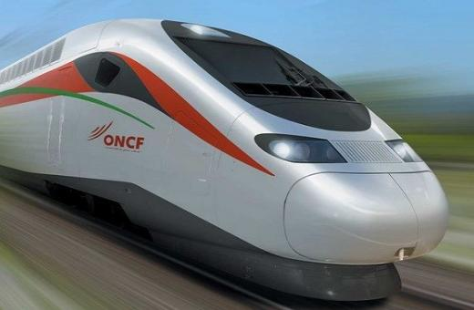
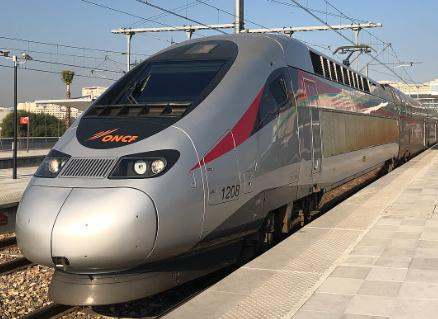
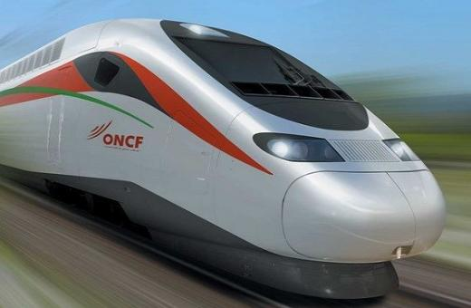
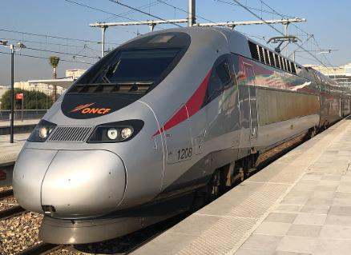
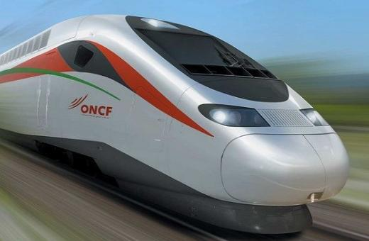
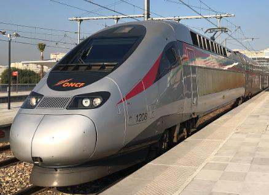

ONCF Al Boraq е услугата за високоскоростни влакове в Мароко, която бележи значителен напредък в железопътната транспортна система на страната. Стартирал през ноември 2018 г.,
Al Boraq оперира по линията Танжер-Казабланка, покривайки разстояние от приблизително
350 километра (около 217 мили). С максимална скорост от 320 km/h (199 mph), това е
първата високоскоростна железопътна услуга в Африка, осигуряваща бърза и удобна опция
за пътуване за пътниците.
Влакът разполага с модерни удобства, включително просторни места за сядане, Wi-Fi свързаност и услуги за хранене, осигуряващи приятно пътуване. Al Boraq значително
намалява времето за пътуване между Танжер и Казабланка, като отнема малко повече от
два часа в сравнение с предишното петчасово пътуване с конвенционални влакове.
Проектът е сътрудничество между мароканското правителство и френски инженерни фирми, което отразява ангажимента на Мароко да модернизира своята инфраструктура. Al Boraq
не само подобрява свързаността между големите градове, но също така насърчава икономическото развитие и туризма в региона, което го прави жизненоважен компонент от бъдещия транспортен пейзаж на Мароко.